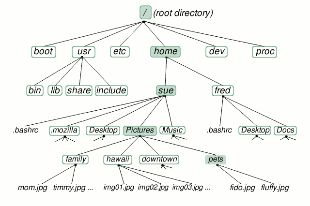

Navigating the file tree¶
Wait, what is a “file tree”?
Let’s find out!
Now let’s go in to that directory:
cd tutorial-shell-genomics
This stands for ‘change directory’
In this directory, there should be some things we just downloaded. Let’s check. Type:
ls
ls stands for ‘list’ and it lists the contents of a directory.
There’s a few directories there, but not too many. Let’s go look in the raw_data directory:
cd raw_data
ls
In there, all mixed up together are files and directories/folders. If we want to know which is which, we can type:
ls -F
Anything with a “/” after it is a directory. Things with a “*” after them are programs. It there’s nothing there it’s a file.
You can also use the command ls -l to see whether items in a directory are files or directories. ls -l gives a lot more information too, such as the size of the file
So, we can see that we have several files, directories and a program. Great!
Arguments¶
Most programs take additional arguments that control their exact behavior. For example, -F and -l are arguments to ls. The ls program, like many programs, take a lot of arguments. But how do we know what the options are to particular commands?
Most commonly used shell programs have a manual. You can access the manual using the man program. Try entering:
man ls
This will open the manual page for ls. Use the space key to go forward and b to go backwards. When you are done reading, just hit q to quit.
Programs that are run from the shell can get extremely complicated. To see an example, open up the manual page for the find program. No one can possibly learn all of these arguments, of course. So you will probably find yourself referring back to the manual page frequently.
The Unix directory file structure (a.k.a. where am I?)¶
As you’ve already just seen, you can move around in different directories or folders at the command line. Why would you want to do this, rather than just navigating around the normal way.
When you’re working with bioinformatics programs, you’re working with your data and it’s key to be able to have that data in the right place and make sure the program has access to the data. Many of the problems people run in to with command line bioinformatics programs is not having the data in the place the program expects it to be.
Moving around the file system¶
Let’s practice moving around a bit.
We’re going to work in that tutorial-shell-genomics directory we just downloaded.
First let’s navigate there using the regular way by clicking on the different folders.
First we did something like go to the folder of our username. Then we opened ‘tutorial-shell-genomics’ then ‘raw_data’
Let’s draw out how that went.
Now let’s draw some of the other files and folders we could have clicked on.
This is called a hierarchical file system structure, like an upside down tree with root (/) at the base that looks like this.
That (/) at the base is often also called the ‘top’ level.
When you are working at your computer or log in to a remote computer, you are on one of the branches of that tree, your home directory (/home/username)
Now let’s go do that same navigation at the command line.
Type:
cd
This puts you in your home directory. This folder here.
Now using cd and ls, go in to the tutorial-shell-genomics directory and list its contents.
Let’s also check to see where we are. Sometimes when we’re wandering around in the file system, it’s easy to lose track of where we are and get lost.
If you want to know what directory you’re currently in, type:
pwd
This stands for ‘present working directory’. The directory you’re currently working in.
What if we want to move back up and out of the ‘raw_data’ directory? Can we just type ‘tutorial-shell-genomics’? Try it and see what happens.
To go ‘back up a level’ we need to use ..
Type:
cd ..
Now do ls and pwd. See now that we went back up in to the ‘tutorial-shell-genomics’ directory. .. just means go back up a level.
Note
Now we’re going to try a hunt. Move around in the ‘hidden’ directory and try to find the file ‘youfoundit.txt’
Note
Extra credit if you can use arguments to ls to find supersecret_youfoundit.txt
Examining the contents of other directories¶
By default, the ls commands lists the contents of the working directory (i.e. the directory you are in). You can always find the directory you are in using the pwd command. However, you can also give ls the names of other directories to view. Navigate to the home directory if you are not already there.
Type:
cd
Then enter the command:
ls processed_data
This will list the contents of the processed_data directory without you having to navigate there.
The cd command works in a similar way. Try entering:
cd
cd tutorial-shell-genomics/processed_data/bams
and you will jump directly to bams without having to go through the intermediate directory.
Note
Try finding the ‘hisat2_pass1.sh’ file without changing directories.
Shortcut: Tab Completion¶
Navigate to the home directory. Typing out directory names can waste a lot of time. When you start typing out the name of a directory, then hit the tab key, the shell will try to fill in the rest of the directory name. For example, enter:
cd tut<tab>
The shell will fill in the rest of the directory name for tutorial-shell-genomics. Now go to tutorial-shell-genomics/raw_data/illumina/rnaseq and type:
ls SRR<tab><tab>
When you hit the first tab, nothing happens. The reason is that there are multiple files in the directory which start with SRR. Thus, the shell does not know which one to fill in. When you hit tab again, the shell will list the possible choices.
Tab completion can also fill in the names of programs. For example, enter:
e<tab><tab>
You will see the name of every program that starts with an e. One of those is echo. If you enter ec<tab> you will see that tab completion works.
Full vs. Relative Paths¶
The cd command takes an argument which is the directory name. Directories can be specified using either a relative path or a full path. The directories on the computer are arranged into a hierarchy. The full path tells you where a directory is in that hierarchy. Navigate to the home directory. Now, enter the pwd command and you should see:
/home/username
which is the full name of your home directory. This tells you that you are in a directory called username, which sits inside a directory called home which sits inside the very top directory in the hierarchy. The very top of the hierarchy is a directory called / which is usually referred to as the root directory. So, to summarize: username is a directory in home which is a directory in /.
Now enter the following command:
cd /home/username/tutorial-shell-genomics/raw_data/illumina/rnaseq
This jumps to rnaseq. Now go back to the home directory (cd). We saw earlier that the command:
cd tutorial-shell-genomics/raw_data/illumina/rnaseq
had the same effect - it took us to the rnaseq directory. But, instead of specifying the full path (/home/username/tutorial-shell-genomics/raw_data/illumina/rnaseq), we specified a relative path. In other words, we specified the path relative to our current directory. A full path always starts with a /. A relative path does not.
A relative path is like getting directions from someone on the street. They tell you to “go right at the Stop sign, and then turn left on Main Street”. That works great if you’re standing there together, but not so well if you’re trying to tell someone how to get there from another country. A full path is like GPS coordinates. It tells you exactly where something is no matter where you are right now.
You can usually use either a full path or a relative path depending on what is most convenient. If we are in the home directory, it is more convenient to just enter the relative path since it involves less typing.
Over time, it will become easier for you to keep a mental note of the structure of the directories that you are using and how to quickly navigate amongst them.
Note
Now, list the contents of the /bin directory. Windows users, you might need to look in Windows/System32 or System64. Do you see anything familiar in there?
Saving time with shortcuts, wild cards, and tab completion¶
Shortcuts¶
There are some shortcuts which you should know about. Dealing with the home directory is very common. So, in the shell the tilde character, “”~””, is a shortcut for your home directory. Navigate to the tutorial-shell-genomics directory:
cd
cd tutorial-shell-genomics
cd raw_data
Then enter the command:
ls ~
This prints the contents of your home directory, without you having to type the full path. The shortcut .. always refers to the directory above your current directory. Thus:
ls ..
prints the contents of the /home/username/tutorial-shell-genomics. You can chain these together, so:
ls ../../
prints the contents of /home/username which is your home directory. Finally, the special directory . always refers to your current directory. So, ls, ls ., and ls ././././. all do the same thing, they print the contents of the current directory. This may seem like a useless shortcut right now, but we’ll see when it is needed in a little while.
To summarize, while you are in the shell directory, the commands ls ~, ls ~/., ls ../../, and ls /home/username all do exactly the same thing. These shortcuts are not necessary, they are provided for your convenience.